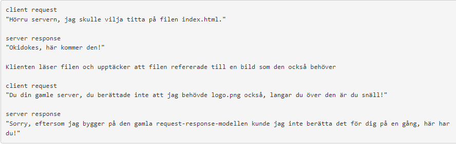

HTMLs Historia

Under de första fem åren (1990-1995) gick HTML igenom ett antal revisioner och fick ett antal tillägg, främst värd först på CERN och sedan på IETF.
Med skapandet av W3C ändrades HTMLs utvecklingsplats igen. Ett första misslyckat försök att utöka HTML 1995, känd som HTML 3.0, gjorde sedan plats för en mer praktisk metod känd som HTML 3.2, som slutfördes 1997. HTML4 följde snabbt senare samma år.
Runt den tid då HTMLs utveckling stoppades 1998 specificerades delar av API:et för HTML utvecklat av webbläsarleverantörer och publicerades under namnet DOM Level 1 (1998) och DOM Level 2 Core och DOM Level 2 HTML (med start 2000 och som kulminerade 2003). Dessa ansträngningar försvann sedan, med några DOM nivå 3-specifikationer publicerade 2004 men arbetsgruppen stängdes innan alla nivå 3-utkast var färdiga.
Året därpå beslutade W3C-medlemskapet att sluta utveckla HTML och istället börja arbeta på en XML-baserad motsvarighet, kallad XHTML. Detta försök började med en omformulering av HTML4 i XML, känd som XHTML 1.0, som inte lade till några nya funktioner förutom den nya serialiseringen, och som slutfördes 2000. Efter XHTML 1.0 vändes W3C:s fokus till att göra det lättare för andra arbetsgrupper att utöka XHTML, under flaggan XHTML Modularization. Samtidigt med detta arbetade W3C också på ett nytt språk som inte var kompatibelt med de tidigare HTML- och XHTML-språken, kallar det XHTML2.

2003 väckte publiceringen av XForms, en teknik som var positionerad som nästa generation av webbformulär, ett förnyat intresse för att utveckla HTML i sig, snarare än att hitta ersättare för det. Detta intresse kom från insikten att XML:s distribution som webbteknik var begränsad till helt nya teknologier (som RSS och senare Atom), snarare än som en ersättning för befintliga distribuerade tekniker (som HTML).
Ett “proof of concept” för att visa att det var möjligt att utöka HTML4s formulär för att tillhandahålla många av de funktioner som XForms 1.0 introducerade, utan att webbläsare skulle behöva implementera renderingsmotorer som var inkompatibla med befintliga HTML-webbsidor, var det första resultatet av detta förnyade intresse. I detta tidiga skede, medan utkastet redan var allmänt tillgängligt och input redan begärdes från alla källor, var specifikationen endast under Opera Softwares upphovsrätt.
Idén att HTMLs utveckling skulle återupptas testades vid en W3C-workshop 2004, där några av principerna som ligger till grund för HTML5-arbetet (beskrivs nedan), såväl som det tidigare nämnda tidiga förslaget som täcker bara formulärrelaterade funktioner, presenterades för W3C gemensamt av Mozilla och Opera. Förslaget avslogs med motiveringen att förslaget stred mot den tidigare valda riktningen för webbens utveckling; W3C:s personal och medlemmar röstade för att fortsätta utveckla XML-baserade ersättningar istället.
Kort därefter tillkännagav Apple, Mozilla och Opera tillsammans sin avsikt att fortsätta arbeta med insatsen under paraplyet av en ny plats kallad WHATWG. En offentlig e-postlista skapades och utkastet flyttades till WHATWG-webbplatsen. Upphovsrätten ändrades därefter för att ägas gemensamt av alla tre leverantörerna och för att tillåta återanvändning av specifikationen.
WHATWG baserades på flera kärnprinciper, särskilt att tekniker måste vara bakåtkompatibla, att specifikationer och implementeringar måste matcha även om detta innebär att man ändrar specifikationen snarare än implementeringarna, och att specifikationer måste vara tillräckligt detaljerade för att implementeringar kan uppnås. fullständig driftskompatibilitet utan att omvända varandra.
Särskilt det senare kravet krävde att omfattningen av HTML5-specifikationen inkluderar vad som tidigare hade specificerats i tre separata dokument: HTML4, XHTML1 och DOM2 HTML. Det innebar också att inkludera betydligt fler detaljer än vad som tidigare ansetts vara normen.
2006 indikerade W3C ett intresse av att trots allt delta i utvecklingen av HTML5, och 2007 bildade W3C en arbetsgrupp för att arbeta med WHATWG om utvecklingen av HTML5-specifikationen. Apple, Mozilla och Opera tillät W3C att publicera specifikationen under W3C-upphovsrätten, samtidigt som de behöll en version med den mindre restriktiva licensen på WHATWG-webbplatsen.
Under ett antal år arbetade sedan båda grupperna tillsammans. 2011 kom dock grupperna till slutsatsen att de hade olika mål: W3C ville publicera en "färdig" version av "HTML5", medan WHATWG ville fortsätta arbeta med en Living Standard för HTML, med kontinuerligt underhåll av specifikationen istället för att frysa den i ett tillstånd med kända problem och lägga till nya funktioner efter behov för att utveckla plattformen.
Under 2019 undertecknade WHATWG och W3C ett avtal om att samarbeta om en enda version av HTML framöver: detta dokument.
Hur fungerar webben och vad är DOM?
Server Klient
------------->
<-------------
DOM, eller Document Object Model, är ett programmatiskt gränssnitt för HTML- och XML-dokument. Det gör det möjligt för utvecklare att manipulera och ändra innehållet, strukturen och stilen för ett dokument dynamiskt. DOM-modellen representerar dokumentet som en hierarkisk trädstruktur av objekt, där varje element i dokumentet är ett objekt som kan manipuleras genom API:et. Detta gör det enklare att skapa interaktiva webbsidor och webbapplikationer.
Bilden ovan så kan du se hur en "fake" Konversation men ändå riktig (fast inom kod) ser ut mellan klienten och servern. Dvs att dem kommunicerar med varandra för att klienten ska kunna få all information som behövs för att hemsidan ska fungera.

Info about GDPR (Cookies)
The General Data Protection Regulation (GDPR) is a regulation in EU law on data protection and privacy for all individuals within the European Union (EU) and the European Economic Area (EEA). It came into effect on May 25, 2018, replacing the 1995 Data Protection Directive. Websites that collect and process personal data of EU citizens must comply with GDPR requirements. This includes obtaining informed consent for the collection and processing of personal data, as well as providing clear and accessible information about data use, storage, and retention. Websites must also implement appropriate technical and organizational measures to protect personal data, and appoint a Data Protection Officer (DPO) if certain conditions are met. Non-compliance can result in significant fines.